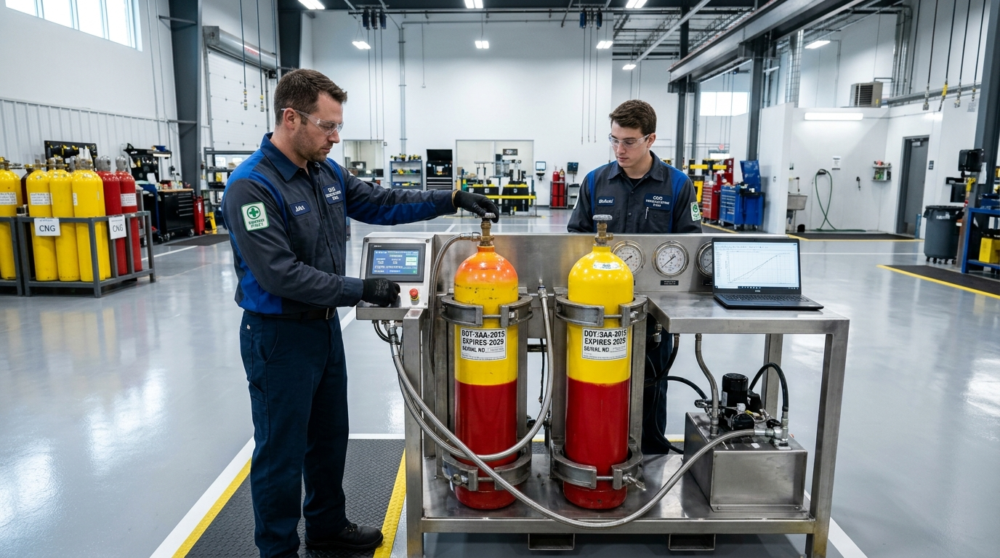
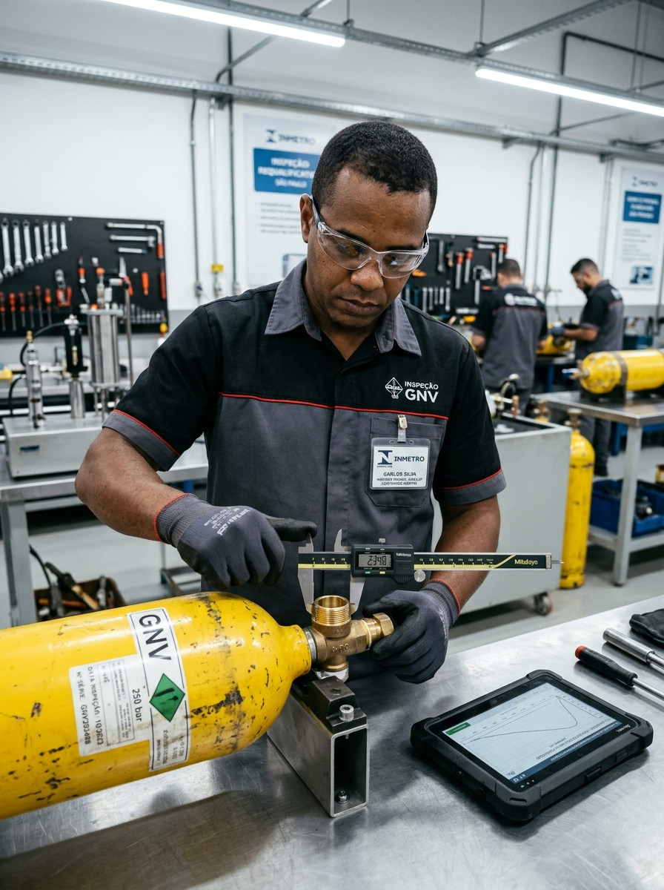

Especialistas em inspeção periódica, teste hidrostático a alta pressão e requalificação veicular. Laudo técnico oficial imediato e garantia de conformidade em Padre Miguel — Rio de Janeiro.
A Real Teste GNV nasceu com a missão de proporcionar tranquilidade, segurança viária e regularidade aos proprietários de veículos convertidos a Gás Natural Veicular.
Localizada na Rua Murundu, 382 em Padre Miguel, nossa oficina conta com infraestrutura industrial moderna, bancada própria de teste hidrostático calibrada, técnicos especializados e processo homologado conforme as rigorosas normas da ABNT e do Inmetro (NBR 12274 / NBR 13199). Atendemos taxistas, motoristas de aplicativo (Uber/99), frotistas e motoristas particulares com rapidez, sem enrolação e com laudo imediato.

Todos os procedimentos necessários para a inspeção, requalificação e segurança do sistema de gás natural do seu veículo.
Teste hidrostático pressurizado a água para aferição da dilatação elástica e resistência mecânica do cilindro, atendendo aos padrões do Inmetro.
Avaliação milimétrica contra corrosões, amassados, trincas ou desgastes na parede do cilindro com instrumentos de ultrassom de alta precisão.
Desmontagem, teste de estanqueidade, substituição de orings, e troca de válvulas de alívio térmico/pressão (dispositivo de excesso de fluxo).
Eliminação de resíduos de óleo, água condensada e impurezas do gás, garantindo secagem térmica a ar quente para evitar oxidação interna.
Entenda de forma clara e transparente cada etapa técnica realizada na Real Teste GNV para garantir a segurança da sua família e do seu veículo.
O veículo chega à nossa oficina, conferimos a documentação e desinstalamos o cilindro com técnica e ferramentas apropriadas sem danificar seu porta-malas.
Despressurização segura em área ventilada, retirada da válvula, limpeza de resíduos e inspeção minuciosa com medição da espessura de parede em pontos críticos.
O cilindro é preenchido com água dentro de uma jaqueta de aço e submetido a 300 bar de pressão para medir a expansão volumétrica elástica e permanente.
Secagem térmica completa a ar quente, pesagem em balança de precisão aferida pelo IPEM/Inmetro para checar eventual perda de massa (tara).
Gravação da nova data de validade na cúpula do cilindro, fixação do novo selo homologado e emissão do Laudo Técnico Oficial pronto para o Detran.
Descubra em segundos se o seu cilindro precisa de requalificação técnica obrigatória de 5 anos.
Veja a experiência de quem já realizou o reteste de cilindro GNV com a equipe da Real Teste em Padre Miguel.
"Trabalho na Uber e não posso perder dia de corrida. Agendei na Real Teste GNV pela manhã e no início da tarde o cilindro já estava testado, com o selo do Inmetro e laudo na mão. Serviço rápido e preço justo!"
"Lugar de confiança! Me explicaram todo o teste hidrostático, trocaram o reparo da válvula que estava ressecado e me entregaram o laudo certinho para o Detran. Atendimento nota 10 aqui em Padre Miguel."
"Oficina impecável, bancada industrial de verdade e equipe super transparente. Meu cilindro era de 2019 e já estava vencido, abastecia com medo nos postos. Agora estou rodando 100% legalizado e seguro."
"Primeira vez que precisei fazer o reteste e fui muito bem atendida. A equipe tirou todas as minhas dúvidas sobre a requalificação e entregou o laudo oficial no mesmo dia. Espaço limpo e profissionais de confiança!"
"Tenho utilitários de entrega e não posso deixar veículo parado. A Real Teste cumpriu o horário agendado à risca, fez o teste a 300 bar e emitiu o laudo na hora. Preço justo para frota e aprovação imediata no Detran."
"Atendimento nota dez em Padre Miguel! Cheguei com o cilindro perto do vencimento, fizeram a revisão completa com teste hidrostático e troca de orings. Já saí de lá direto para o posto abastecer com total tranquilidade."
Confira as respostas para as perguntas mais comuns sobre prazos, documentos e procedimentos de reteste.
Fácil acesso pelas principais vias da Zona Oeste do Rio de Janeiro. Espaço amplo para manobra e estacionamento para clientes.
Rua Murundu, 382 — Padre Miguel, Rio de Janeiro - RJ, CEP: 21775-000
(21) 3336-6624 / WhatsApp disponível para orçamentos
Segunda a Sexta: 08:00 às 18:00
Sábados: 08:00 às 12:00
Preencha os dados do seu veículo ao lado ou nos chame diretamente no WhatsApp para atendimento imediato.
Motoristas de aplicativo (Uber/99), taxistas e frotistas possuem prioridade e valores especiais em Padre Miguel.